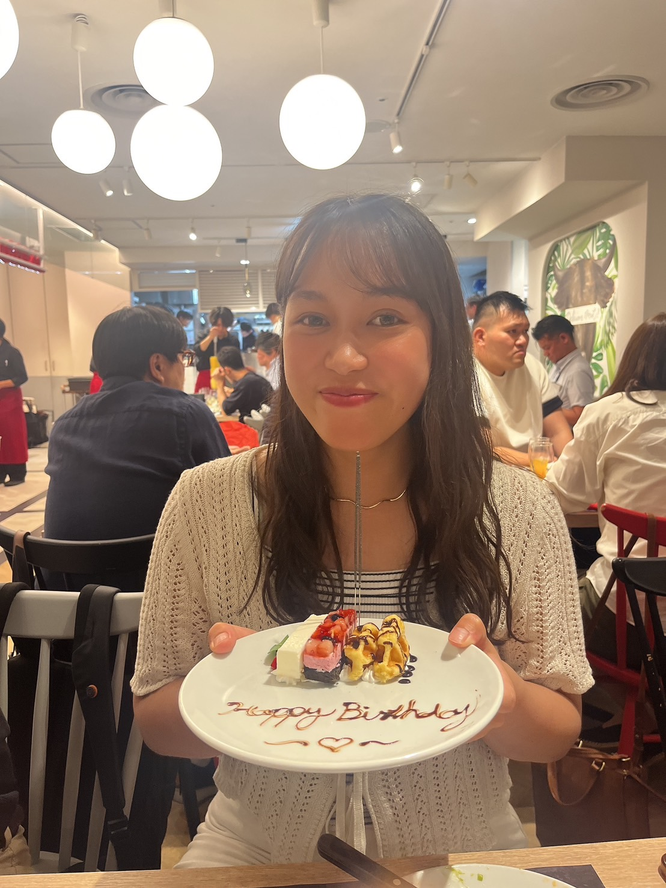

About me
私について

城野 万美子 Shirono Mamiko
上智大学卒業後、不動産会社に入社しました。
その中で、会社のホームページや広告デザインが顧客の物件選択に大きな影響を持つことを実感しました。特に、見やすく魅力的なデザインが、顧客の信頼と興味を喚起し、問い合わせに繋がることを目の当たりにし、デザインの重要性を深く認識しました。
この経験から、私もデザインを仕事にしたいと思いWEB COACHに入学しました。営業で培ったコミュニケーション力や、寄り添う力を活かし、クライアントさまの課題解決に貢献できるWebデザイナーを目指します。